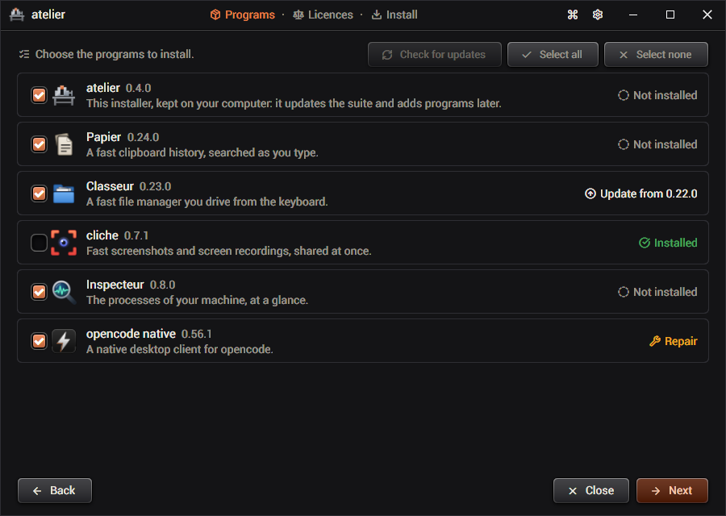
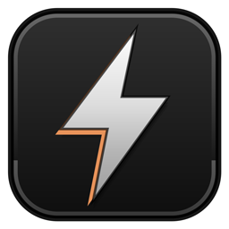
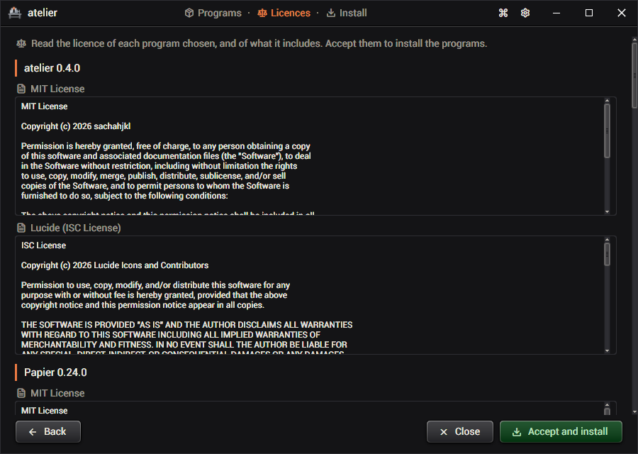
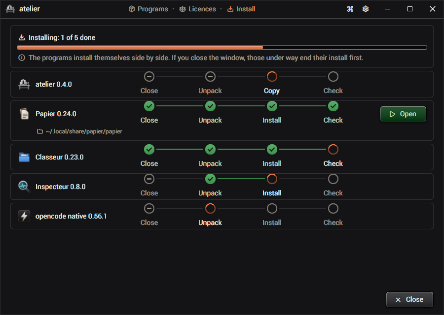
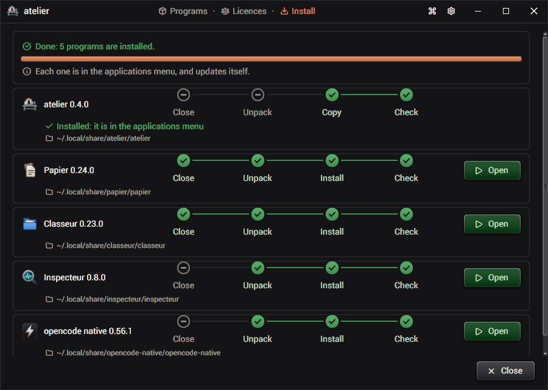

One file
The download carries every program at the version of its own release. It installs without the network.
The working man's tools. Every desktop program of Froment Software in one download: choose them, read their licences, and they install at once.
· one file, no network needed · MIT

Native programs, each a single file of a few megabytes, at 0 % CPU when they wait. Each one updates itself once installed.
 papierA fast clipboard history, searched as you type.Linux · Windows
papierA fast clipboard history, searched as you type.Linux · Windows
 classeurA fast file manager you drive from the keyboard.Linux · Windows
classeurA fast file manager you drive from the keyboard.Linux · Windows
 clicheFast screenshots and screen recordings, shared at once.Linux · Windows
clicheFast screenshots and screen recordings, shared at once.Linux · Windows
 inspecteurThe processes of your machine, at a glance.Linux
inspecteurThe processes of your machine, at a glance.Linux

opencode nativeA native desktop client for opencode.Linux · WindowsThe download carries every program at the version of its own release. It installs without the network.
Each program shows what is installed: not yet, an older version to update, or already current.
Before anything is written, you read the licence of each program and of what it includes.
atelier runs each program's own --install: the same folder, menu entry and uninstaller as its own Install button.
Everything goes in your profile. No administrator, no service, nothing in the system's folders.
atelier list says what it carries; atelier install all installs without a window.



One program for Windows 10 and 11 (x64). Start it: it installs papier, classeur, cliche and opencode native.
atelier-{{version}}-windows-x64.exe
One program for Linux x64. Make it executable and start it: chmod +x atelier-*-linux-x64.
atelier-{{version}}-linux-x64
Nix installs and updates each program from its flake. atelier shows the line of each one.
nix profile add github:sachahjkl/papier
Each release says the version of every program it carries. The README says the rest.